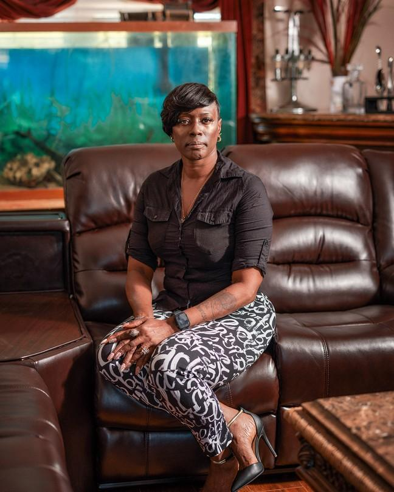
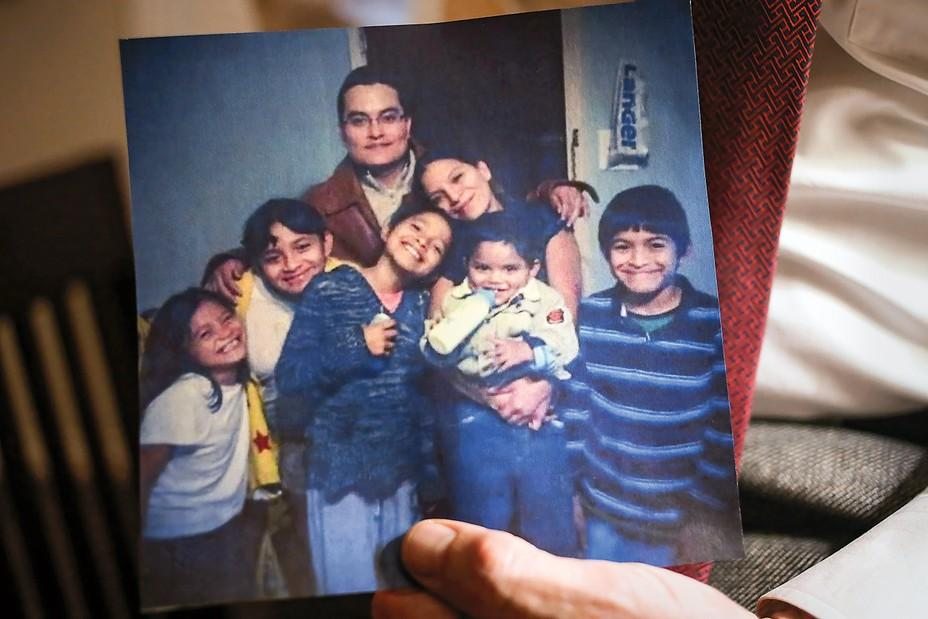

| 上一项 | 文章 | 章节 | 下一项 |
When the Myth of Voter Fraud Comes for You
To support the Republican narrative that our elections are rife with misconduct, someone needs to take the fall.
by Vann R. Newkirk II

Crystal Mason at home in October (Photograph by Yael Malka for The Atlantic)
When I met with Crystal Mason recently at her home in Rendon, Texas, we sat on a wide couch that served as the center of her domain, with plenty of space for children, grandchildren, nephews, and nieces. Their photographs filled the house. Mason’s mother called to her from another room, needing advice; later, her eight-month-old grandson, Carter, joined us on the couch after waking up from an afternoon nap. For hours that day, Mason spoke candidly about the illegal-voting case that has consumed her life for half a decade. With us was one of her lawyers, Alison Grinter Allen.
If there is an individual in America who epitomizes one central aspect of our political moment, it might well be Crystal Mason. The story of Mason, a Black woman, illuminates the extraordinary efforts the Republican Party has made to demonstrate that fraud is being committed by minority voters on a massive scale. That false notion is now an article of faith among tens of millions of Americans. It has become an excuse to enact laws that make voting harder for everyone, but especially for voters of color, voters who are poor, voters who are old, and voters who were not born in the United States.
Mason watches the news diligently and can recount the details of prosecutions that have resulted thus far from the attack on the Capitol on January 6—an attack that was stoked by conspiracy theories about fraudulent voters. She can’t help but wonder about punishments meted out for the insurrection as compared with the one she has already received for, she says, unwittingly violating a Texas voting law. “These people,” Mason said of the participants in the January 6 assault, “came to do and commit dangerous crimes.” When she and I spoke, only two of them had been sentenced to jail or prison, and neither for more than eight months. Mason was sentenced to five years. She is currently out on bond while she appeals her conviction.
The idea that systemic fraud has subverted the democratic process demands a search for evidence of such fraud. The point of this effort is not merely to support spurious claims that Donald Trump won the 2020 election or to stockpile spurious arguments in advance of 2024. It is to lay a foundation for the resurgence of a specific form of Jim Crow–style disenfranchisement. Jim Crow relied on outright bans at the ballot box and threats of violence to ensure white political power. But eliminating the Black vote during that era was accomplished in subtler ways as well: by undermining community cohesion, by sapping time and energy, by sheer frustration. The modern effort relies on similar tactics. The so-called Big Lie is built on small lies, about the actions and intentions of individuals—the kinds of lies that can destroy lives and families.
Crystal Mason’s role in this story began during the 2016 presidential election. She was 41 and readjusting to life at home after serving most of a five-year sentence in federal prison for tax fraud. Mason had run a tax-preparation business with her then-husband and had been charged with inflating their clients’ refunds. Mason pleaded guilty and paid the penalty; after four years, a supervised-release program allowed her to return to her home. She has publicly “owned up,” as she has said, to her mistakes.
Mason has three adult children, and cares for other members of the family. She had been putting her life back together, working at a Santander bank in nearby Dallas and taking classes to become an aesthetician. Around this same time, Donald Trump was making his ascent: calling Mexican immigrants “rapists,” brandishing casual racism and xenophobia, and asking Black voters what the hell they had to lose by voting for him. Texas was not expected to be a swing state, but in this menacing atmosphere, Mason’s mother told Crystal it was her duty to vote.
On Election Day, Mason drove to her polling place, the Tabernacle Baptist Church. She was coming from work, and almost didn’t make it. “It was raining,” Mason told me, remembering the night. “It was right at 7 o’clock, when it was about to be closing up. I went with my name and my ID—who I was—to where I was supposed to go.” But a volunteer there, a 16-year-old neighbor of hers named Jarrod Streibich, couldn’t find her name on the rolls, which happens sometimes. Streibich suggested that she use a provisional ballot. “They offered it to me,” Mason recalled, “and I said, ‘What’s that?’ And they said, ‘Well, if we’re at the right location, it’ll count. If you’re not, it won’t.’ ” There was nothing particularly noteworthy about the interaction. Like tens of thousands of Texas voters, and millions of Americans across the country, Mason cast a provisional ballot, and went home.
Mason’s provisional ballot was destined to be rejected, however. Texas law requires all terms of any felony sentence to be completed before a person once again becomes eligible to vote, and Mason had not fully completed her sentence for the tax-fraud conviction. Mason says she didn’t know that ineligibility extended to the period of supervised release; she made a simple mistake. Many provisional ballots are rejected because of ineligibility, often for reasons potential voters are unaware of. Mason was sent a letter after the election stating that her provisional ballot had been disallowed.
It must be underscored: There is no evidence that illegal voting occurs at a level capable of influencing elections.
By any reasonable measure, Mason’s experience at the polls amounted to a meaningless misunderstanding that had no effect on anything. Donald Trump carried Tarrant County, which includes Rendon, and all of Texas by a healthy margin on his way to winning the White House in 2016. Republicans in Texas retained control of most of the political system in the state. Trump was inaugurated in January. Mason continued her court-mandated check-ins with her supervision officer.
Without realizing it, however, Mason had become the subject of an investigation. After the polls closed, Streibich, the neighbor who had suggested that she use a provisional ballot in the first place, told an election judge on the scene—who was also a neighbor of Mason’s—something he had just remembered: that he thought Mason might still be on supervised release for a federal offense. The judge, Karl Dietrich, a local Republican Party official, informed the Tarrant County district attorney, Sharen Wilson. On February 16, 2017, Crystal Mason was arrested for illegal voting.
Fear of voter fraud, or at least the pretense of fear, has been a centerpiece of conservative objections to the expansion of voting rights going back, in the modern era, to the Voting Rights Act of 1965. Taking steps to curb alleged illegal voting tends to boost Republican electoral fortunes by disenfranchising people of color.
In 2008, the increase in Black turnout that helped put Barack Obama in office—and raised hopes among Democrats for a “demographic revolution” that would aid their cause for years to come—gave voter suppression new urgency. Then, in 2013, the Supreme Court’s decision in Shelby County v. Holder granted states more power to keep people from the polls. The decision effectively eliminated the system of preemptive federal oversight that had been in place since the passage of the Voting Rights Act. In the absence of new legislation at the national level, state laws restricting the right or ability to vote could now be blocked only if courts found them to be discriminatory after their passage. In other words, governments could be elected under legal regimes that might ultimately prove to be unconstitutional; once in office, they would be free to further restrict voting.
Meanwhile, the Court made clear in other cases that it was inclined to take states at their word if they said restrictive voting laws were simply intended to combat fraud and had no racist intent—even if the predictable consequence of those laws was to create greater burdens for voters of color. Taking states at their word provided a lot of cover. The result was a surge of democracy-limiting measures in Republican-led states: restrictive voter-ID laws, tighter guidelines for registration, and wholesale purges of voters from the electoral rolls, conducted in such a way that people of color have been disproportionately affected. According to the nonprofit Brennan Center for Justice, 33 restrictive laws were passed in 19 states in the first nine months of 2021. The laws, which will make casting a ballot more difficult in 2022, reveal how central voter suppression has become as a mobilizing issue for the GOP.
It must be underscored: There is no evidence that illegal voting of any kind occurs at a level capable of influencing elections. Nor is there evidence that the scattered violations that do take place have been increasing in frequency or severity. Common kinds of election violations include local candidates fudging signatures to get on the ballot, partisans politicking too close to polling places, and people accidentally voting at the polls after forgetting that they had already mailed in a ballot—a glitch easily corrected by administrative procedures that already exist.
Most of the new laws, however, are aimed at violations that are exceedingly rare: impersonation of one person by another, or noncitizens attempting to vote. Such violations are already illegal, yet their specter is raised to make the case for, among other measures, voter-ID laws. Voting-rights advocates and federal courts have agreed that such laws tend to target and disenfranchise people of color, older folks, and students—groups less likely to have identification documents of the kind that many of the new laws require.
In 2012, before Shelby County allowed Texas to implement a strict new voter-ID law without federal oversight, Greg Abbott, then the Texas attorney general, railed against a decision by the Department of Justice to block the law from going into effect. “I know for a fact that voter fraud is real, that it must be stopped,” he said. When he made that statement, the official rate of alleged election violations reported to his office over the previous decade—allegations, not convictions—was seven for every 1 million votes cast in the state. Data from Abbott’s own office showed that, over the same period, in all Texas elections at every level, 26 people had been convicted of some form of election violation. Only two of those cases involved someone impersonating another voter, which is what the voter-ID law was ostensibly supposed to address. Rather than attempting to prove the impossible—that illegal voting was truly a problem—Abbott and other GOP officials across the country chose to make public examples of the very few cases of alleged voter fraud they could find.
Read: Texas voter-fraud claims don’t have to be true to achieve their goal
Abbott was elected governor in 2014. His successor as attorney general, Ken Paxton, eagerly took up the cause. One of Paxton’s allies was District Attorney Sharen Wilson. In 2015, she began investigating Rosa Maria Ortega, a 35-year-old mother of four who lived in the Dallas suburbs. Ortega had been born in Mexico and came to the U.S. as a baby. She held permanent-resident status. As a noncitizen, she was not eligible to vote, but she had registered (as a Republican) and had cast ballots in several elections in Dallas County, including for Paxton as attorney general, before she moved to Tarrant County. Her new voter-registration application was rejected because she had correctly indicated her citizenship status. Ortega then sent in another application, this time identifying herself as a citizen. She had done the same thing in Dallas County, and voted without issue; she has said that when Tarrant County accepted her registration, she assumed she was allowed to vote again.
Ortega was indicted and declined a plea deal, which, her lawyers warned, would likely result in deportation. In court, the defense cited Ortega’s professed misunderstanding of election law as it applied to permanent residents, and her lack of a motive for purposefully breaking the law. The prosecution presented her actions as part of a disturbing statewide pattern. As Wilson said after Ortega’s indictment, “People insist this kind of thing doesn’t happen, but it’s happening right here at home.”

Rosa Maria Ortega with her family (Dylan Hollingsworth / The New York Times / Redux)
Wilson’s office has denied in the past that its work has been politically motivated or employed as a “scare tactic.” In a statement, a spokesperson for the district attorney wrote that Wilson “didn’t go out looking for the voter fraud cases against Crystal Mason and Rosa Maria Ortega.” The spokesperson also noted that Ortega had been offered probation, but had turned it down. In February 2017, she was convicted of illegal voting and sentenced to eight years in prison. When the Fort Worth Star-Telegram reviewed hundreds of voting-related cases in Texas from 2005 to 2018, it found that Ortega’s sentence was the longest one handed down. A prosecutor praised the jury, saying it had secured the “floodgates” that kept illegal voting under control. Ortega’s case fit a familiar narrative: that immigrant voters are subverting democracy. She served nine months in prison before being paroled, then spent nearly two months in the custody of U.S. Immigration and Customs Enforcement. She is currently on parole and living in Dallas, according to Wilson’s office.
One week after Ortega’s conviction, Crystal Mason was arrested, and found her life newly upended. Mason’s family had often been in conflict with other residents in their predominantly white community—for a variety of reasons, including, Mason and her lawyers believe, outright racism. When her children were younger, she told me, a neighbor had once brandished a shotgun as her son passed by; her then-husband reported the incident, and she said that local authorities added a bus stop closer to her home so that her children could keep away from the neighbor’s house. Now she faced charges brought by the local district attorney. There was no way to keep a low profile. She lost her job.
The district attorney offered a deal: 10 years’ probation. But the deal required an admission of guilt, which Mason could not accept. It also would have put her back in prison: The mere fact of a conviction would mean that she had violated the terms of her supervised release. The only way for Mason to remain free was to prove her innocence. She chose a trial before a judge.
Read: The Supreme Court might kill voting rights—quietly
As prosecutors presented it, Mason was a felon who had ignored notifications sent by election officials to her home, warning that she was no longer a registered voter. Despite those warnings, she had nevertheless signed an affidavit when accepting her provisional ballot, affirming that she was indeed a registered voter. Her crime was not accidental, prosecutors argued, but a purposeful subversion of democracy.
Mason’s legal team countered that the notices about illegal voting had been sent to her home while she was in prison, and therefore she had never received them. They argued, too, that, unlike people returning from state prisons on parole or probation, who typically receive official instruction about voting eligibility, as a federal inmate, she had been given no such instruction when starting her supervised release. (The person who oversaw the officer responsible for Mason’s supervision confirmed this in court testimony: “That’s just not something we do.”) As Mason recalled when I spoke with her, the affidavit was just another thing to sign, and she hadn’t really read it closely. She was focused on providing the personal information that the same sheet of paper was requesting. She said to me, “Do you have a mortgage? Have you read all your mortgage papers and all the closing [documents]?” What bothers her most is that there was no serious attempt to establish any sort of criminal motive. “They said I tried to circumvent the system,” Mason said. “And for what? For a sticker?” Alison Grinter Allen, her attorney, echoed the point: “Why would you risk two to 20 years in the penitentiary in order to shout your opinion into the wind, basically?”
The arguments on Mason’s behalf proved unavailing. She was convicted and sentenced to five years in prison. The prosecution had argued for “a stern prison sentence” in order to “send a message.” Mason subsequently appealed to a three-judge panel, which upheld her conviction. Her case is now under review by the Texas Court of Criminal Appeals.
The fear of being caught up in a punitive administrative labyrinth adds another variable to the calculus of deciding whether to vote at all.
The ACLU of Texas has been assisting with Mason’s defense, and its data suggest a racial double standard in cases like hers. A 2021 study by the group found that nearly three-quarters of prosecutions by the state’s Election Integrity Unit appear to have been brought against people of color. Almost half of the total cases appear to have been brought against Black and Latina women, two of the core groups of Democratic voters in the state.
Of course, facts and circumstances differ from case to case, and rules and procedures differ from one legal setting to another. But it is worth recalling the treatment accorded to some white officials who have had encounters with election law. In 2018, Russ Casey, a Republican judge in Tarrant County, pleaded guilty to falsifying signatures in order to get his name on the ballot. Casey held a position of public trust, his actions were egregious, and he admitted that the accusations were true. In a plea deal, he received five years’ probation, with no prison time. In 2016, Sharen Wilson herself was accused of an election-related violation: using the personal information of her subordinates in the D.A.’s office to invite them to a fundraiser and solicit donations from them for her reelection campaign. Her case was dismissed by the district attorney in a nearby county for “insufficient evidence of criminal intent.” Wilson has acknowledged that including her employees on the invitation list for the fundraiser was a mistake.
In Mason’s case, the ACLU of Texas argues that the illegal-voting charge is inappropriate on its face because Mason did not, strictly speaking, ever vote. Her provisional ballot was not counted. According to Tommy Buser-Clancy, an ACLU staff attorney, Mason’s prosecution could theoretically open the door to felony charges against any potential voter whose provisional ballot is rejected: “If you start to criminalize people who make mistakes, [who think] they’re eligible and then find out they’re not, then that guts the provisional-balloting system—turns it into a trap.” The D.A.’s office has publicly dismissed the possibility that Mason’s prosecution poses any danger of precedent to people who make simple mistakes or act unknowingly; the decision by the three-judge panel in the Mason case articulated a different view. It declared that, under Texas law, prosecutors did not need to establish that Mason knew she was ineligible.
Because of her conviction, Mason’s supervised release was revoked, and in September 2018 she was returned to prison. One of Mason’s lawyers launched a crowdfunding effort to help provide for her immediate and extended family; health insurance was a particular concern. (She has been able to raise $81,000.) “It was devastating,” Mason told me. “I was like, ‘Are you serious? I’m a mother.’ ” She recalled her original experience of emerging from prison into the supervised-release program. “I was embarrassed. I was. Because when I got out of prison, I wanted my kids to know that, yeah, I hit that bump in the road. But you can get your life back on track. And that’s what I did.” She was working. She was going to school. And then she was back in prison. Mason was released in May 2019 and was able to return home in June.
As we spoke, the practiced cheerfulness in her voice drained away. “This isn’t supposed to be happening to me. This is not right.”
Only days after his inauguration in 2017, Trump declared that millions of fraudulent votes had been cast, implying that many had been cast by noncitizens or by citizens of color mobilized by Democrats to vote more than once. His evidence for widespread fraud was nonexistent, and his anecdotal accounts, and those of others, collapsed under scrutiny. Gregg Phillips, a Texas businessman and self-proclaimed voter-fraud sleuth, tweeted that he and the Tea Party–associated group True the Vote had identified 3 million noncitizen voters. The source of this information was an unnamed private database, and Trump declared that he would order a full investigation. I spoke with Phillips at the time, and in that conversation he provided no supporting evidence and backed away from any specific number of illegal voters. He told me, “The work that we’re doing could create a foundation for looking at elections moving forward.” I interpreted his statement to be a kind of face-saving fallback. Now I understand it to have been prophetic.
Crystal Mason’s lawyers believe that Trump’s claim of mass voter fraud created an environment in which actions against Mason could be especially punitive. Clark Birdsall, a lawyer for Rosa Maria Ortega, made the same argument, describing Trump’s comments about millions of fraudulent voters as “the 800-pound gorilla sitting in the jury box.”
Adam Serwer: What the GOP really means by ‘voter fraud’
Trump established a Presidential Advisory Commission on Election Integrity, an ostensibly bipartisan body designed to uncover “those laws, rules, policies, activities, strategies, and practices that undermine the American people’s confidence in the integrity of voting processes used in Federal elections.” It fell apart in 2018 after it tried to push states to turn over massive amounts of voter data—including Social Security numbers, party affiliations, and voting histories. Even many Republican politicians believed that the voter data might be used for nefarious purposes. Resistance to handing over the data helped kill the commission.
It had found no evidence of any widespread election violations. But in Republican-led states, investigations proliferated. Kris Kobach, then the Kansas secretary of state and a vice chair of the presidential commission, had provided a blueprint. Even before Trump’s election, he had claimed that there were thousands of fraudulent or dead voters on the rolls in Kansas. He would later claim to have identified more than 100 noncitizen voters in his state. In 2015, leveraging the hysteria he had begun to create, Kobach persuaded the state legislature to give him the power to directly prosecute election-violations cases. (In every other state, only an attorney general or a local district attorney has such authority.) Yet over a period of four years, Kobach brought forward just 15 illegal-voting cases, most of which involved people who had accidentally voted in two places. He secured a single conviction involving a noncitizen voter.
In Texas, besides Ortega’s case, there has been only one other successful prosecution by the state attorney general for voting as a noncitizen since 2005. Five people have been successfully prosecuted for impersonating other voters. Fourteen people—including Crystal Mason—have been successfully prosecuted for voting as felons with unresolved sentences. Only 11 people have been sent to prison by the state for voting violations of any kind. In 2020, Paxton’s office almost doubled the working hours spent on election-violations cases and resolved only 16 of them. All stemmed from voters giving false addresses. (Paxton’s office did not respond to multiple queries related to this article.)
Since 2005, nearly 90 million votes have been cast in Texas. Even if the true number of fraudulent voters is double what the state has prosecuted, the prevalence of election violations—the majority of which involve bad addresses—is about three ten-thousandths of a percent. As for voter impersonation, it is more common for a person to be struck by lightning twice than it is for voter impersonation to happen in Texas.
Those involved in investigating allegations of voter fraud argue that the detection of a small number of violations just means we aren’t as good at detecting the larger number that must be out there somewhere—thus the need for new laws. But laws that make the process of registering and casting a ballot even more convoluted also increase the likelihood that people will make mistakes—the kinds of mistakes that can land them in jail.
It’s a vicious cycle—which is exactly the point. First gin up fear about fraud, then use that fear to aggressively prosecute voting infractions, then use those prosecutions to create stricter laws, then use the stricter laws to induce more examples of fraud, then use those examples to gin up even more fear. The potential impact on turnout is bad enough. But the cumulative effect of restrictive laws corrodes the democratic process itself. In Texas, the narrative fueled in part by Mason’s conviction has given Republicans the momentum to pass laws that restrict voting by mail, permit forms of interference by partisan poll watchers at election sites, and create new classes of felonies for engaging in common forms of voter assistance, such as explaining written instructions to people who don’t speak English. (This last measure is currently facing a lawsuit brought by the Department of Justice.)
Crystal Mason is not the same person she was in 2017, when she was indicted. At the time, she was fearful; her impulse was to lie low. She eventually came to realize that her unwanted notoriety could be leveraged, not only for her own cause but for the cause of voting rights nationwide. When I spoke with her at her home, she had just gotten back from a voting-rights rally in Washington, D.C. She wore a shirt that read Crystal Mason: The Fight Against Voter Suppression.
If she serves her five-year sentence, her infant grandson, who was sitting on her lap, will be reading and at school by the time she gets out. She is thinking about how to prepare family members for what may lie ahead. Her adult children have been deputized to run the house in her absence.
Demagogues and insurrections are not the only—or even the primary—threats to our democracy. The slow, relentless erosion of individual civic agency is at least as dangerous, and perhaps more so. Most of the people accused of “voter fraud” have made mistakes with no provable malicious intent as they navigate voting systems that grow ever more byzantine and frustrating. Their lives may be derailed by reputational damage, by time and money spent in court, by prohibitive fines, and by jail or prison. The people who bear this burden may be the cornerstones of their social worlds. Their fates stand as warnings to others in already fragile communities. In a country where the influence of Black and Latino voters is purposefully diluted by gerrymandering, and where poorer, overworked folks must contend with long lines and short hours at sparse polling locations, the fear of being caught up in a punitive administrative labyrinth adds another variable to the calculus of deciding whether to vote at all.
That is why there is something in this moment reminiscent of the insidious bureaucratic character of Jim Crow. As all-encompassing as we know it to have been, Jim Crow was not imposed by a single stroke. It was built community by community, year by year, ruined life by ruined life, law by law, and lie by lie.
This article appears in the January/February 2022 print edition with the headline “The Small Lie.”
This article was downloaded by calibre from https://www.theatlantic.com/magazine/archive/2022/01/voter-fraud-myth-election-lie/620846/
| 上一项 | 文章 | 章节 | 下一项 |